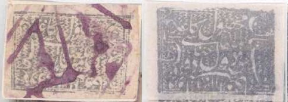
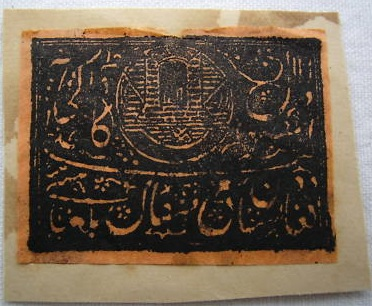
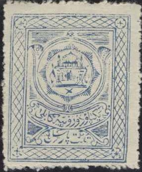
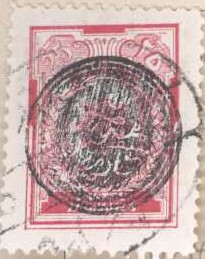
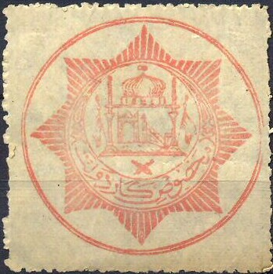

Return To Catalogue - Afghanistan 1870-1874 - Afghanistan 1874-1891
Note: on my website many of the
pictures can not be seen! They are of course present in the
catalogue;
contact me if you want to purchase the catalogue.
For Afghanistan, first issues, click here or here.

1 a grey 2 a grey 1 R grey 1 R grey (larger size)
Instead of tearing a piece of the stamp or penstrokes, the above shown 'Batila' cancel was the first real cancelling device used in Afghanistan. This was usually applied in purple color, but also in red and black(?).
Value of the stamps |
|||
vc = very common c = common * = not so common ** = uncommon |
*** = very uncommon R = rare RR = very rare RRR = extremely rare |
||
| Value | Unused | Used | Remarks |
| 1 a | *** | *** | |
| 2 a | R | R | |
| 1 R | RR | R | |
| 1 R | ** | *** | For registered letters |
Two types exist of these stamps; with inscription '1310' in arabic letters in the upper right hand corner; or with inscription '1316' in arabic letters in the same corner. A registration stamp with arabic inscription '1311' was also issued.
'1310' (size 35 x 24 mm)
1 a black on green 1 a black on yellow 1 a black on red 1 a black on blue 1 a black on violet '1311' (registration stamp, size 36 x 26 1/2 mm )

This stamp is also different from the other issues, by the fact
that there is no long horizontal Arabic character just below the
circular design.
1 a black on green '1316' (size 35 x 27 mm)


2 a black on green 2 a black on yellow 2 a black on red 2 a black on blue 2 a black on violet
Value of the stamps |
|||
vc = very common c = common * = not so common ** = uncommon |
*** = very uncommon R = rare RR = very rare RRR = extremely rare |
||
| Value | Unused | Used | Remarks |
| '1310'; printed on very porous paper | |||
| 1 a black on green | ** | *** | |
| 1 a black on yellow | *** | *** | |
| 1 a black on red | *** | *** | |
| 1 a black on blue | R | R | |
| 1 a black on violet | R | R | |
| '1311'; printed on very porous paper | |||
| 1 a black on green | ** | *** | Registration stamp |
| '1316' | |||
| 2 a black on green | *** | *** | |
| 2 a black on yellow | *** | *** | |
| 2 a black on red | R | *** | |
| 2 a black on blue | R | R | |
| 2 a black on violet | *** | *** | |
On letter, reduced size



(1894 issue, two similar 2 a black on green stamps were also
issued, one for normal and one for registered letters, the value
can be found in the left lower corner)
2 a black on green 1 R black on green
Value of the stamps |
|||
vc = very common c = common * = not so common ** = uncommon |
*** = very uncommon R = rare RR = very rare RRR = extremely rare |
||
| Value | Unused | Used | Remarks |
| 2 a | R | R | |
| 1 R | R | R | |
Sorry, no image available yet
2 a black on red 2 a black on yellow 2 a black on green 2 a black 2 a black on violet 2 a black on blue
Value of the stamps |
|||
vc = very common c = common * = not so common ** = uncommon |
*** = very uncommon R = rare RR = very rare RRR = extremely rare |
||
| Value | Unused | Used | Remarks |
| 2 a black on red | R | R | |
| 2 a black on yellow | R | R | |
| 2 a black on green | R | R | |
| 2 a black | RR | RR | |
| 2 a black on violet | R | R | |
| 2 a black on blue | RR | RR | |
On letter, reduced size; the cancels are typical for this period.
1 a blue 2 a blue 1 R green
All values exist imperforate and perforated 12. The values 1 a and 2 a also exist rouletted.

Rouletted
Value of the stamps |
|||
vc = very common c = common * = not so common ** = uncommon |
*** = very uncommon R = rare RR = very rare RRR = extremely rare |
||
| Value | Unused | Used | Remarks |
| 1 a | R | R | |
| 2 a | *** | *** | Rouletted: RR |
| 1 R | R | R | |
Typical postmark with city names introduced in 1907, elliptic
postmarks were used for ordinary purposes, circular postmarks
were used for transit and arrival marks and rectangular with cut
corners cancels were used for registered mail. Source: http://www.afghanphilately.co.uk/3.html

2 p olive (1916) 1 a blue 1 a red (1919) 2 a green 2 a yellow (1919) 1 R brown 1 R olive (1919)
Value of the stamps |
|||
vc = very common c = common * = not so common ** = uncommon |
*** = very uncommon R = rare RR = very rare RRR = extremely rare |
||
| Value | Unused | Used | Remarks |
| 2 p | *** | *** | |
| 1 a blue | * | * | |
| 1 a red | * | * | |
| 2 a green | ** | ** | |
| 2 a yellow | ** | *** | |
| 1 R brown | *** | *** | |
| 1 R olive | ** | *** | |

3 s brown 3 s green (1917) 1 K olive 1 K red (1917) 1 R orange 1 R olive (1917) 2 R red 2 R blue (1917)
These stamps should be perforated 12, but I've seen imperforate stamps. I've also seen stamps with parts of a watermark 'HOWARD + JONES LONDON'.
Value of the stamps |
|||
vc = very common c = common * = not so common ** = uncommon |
*** = very uncommon R = rare RR = very rare RRR = extremely rare |
||
| Value | Unused | Used | Remarks |
| 3 s brown | * | * | |
| 3 s green | *** | *** | |
| 1 K olive | ** | *** | |
| 1 K red | *** | *** | |
| 1 R orange | R | *** | |
| 1 R olive | ** | *** | |
| 2 R red | *** | *** | |
| 2 R blue | *** | *** | |
Small size (23 x 29 mm) 10 p red (two types, '10' different) 20 p brown (two types, top inscription different) 30 p green Larger size (38 x 46 mm) 10 p red 20 p brown 30 p green Parcel stamps (1924/25, 27 x 40 mm) 5 K blue 5 R lilac
The two types of the 20 p small sized stamps
Reduced size; parcel stamp of 1921
10 p brown 15 p red-brown 30 p lilac 1 R blue
10 p brown (24 x 31 1/2 mm) 10 p brown (larger size, 30 x 37 mm) 10 p blue
10 p lilac

1927 issue, inscription 'AFGHAN POSTAGE'
15 poul red (perforated or imperforate) 15 poul blue (1930) 30 p grey (perforated or imperforate) 30 p green (1930) 60 pool blue (perforated or imperforate) 60 pool black (1930)
With circular seal overprint
The values 15 poul red, 30 p green and 60 p blue exists with a circular seal overprint, which was applied in 1929.
15 p red

1929 issue, inscription 'POSTES AFGHANES'; two different designs
2 p blue (larger sized stamp) 2 p red (1930, larger sized stamp) 10 p green 10 p brown (1930) 25 p red 25 p grey (1930) 40 p blue 40 p red (1930) 50 p red 50 p blue (1930)

The values 2 p blue, 10 p green, 25 p red, 40 p blue and 50 p red exists with a circular seal overprint, which was applied in 1929.
1 A brown 2 A orange (inscripton 'POSTES AFGHAN') 2 A green (1930, inscription 'POSTES AFGHAN') 3 A green 3 A brown (1930)
20 pul red
2 p red 2 p black (1934) 2 p green (1936)
I've seen imperforate stamps of the 2 p red and 2 p black values.
10 p brown (ruins) 10 p violet (1934) 15 p brown (mountain view) 15 p green (1934) 20 p red (government building) 20 p lilac (1934) 25 p green (as 20 p, but with building larger) 25 p red (1934) 30 p red (ruin arch) 30 p orange (1934) 40 p brown (coronation hall) 40 p orange (monument) 40 p black (1934) 45 p blue (palace, 1934) 45 p red (palace, 19??) 50 p light blue (monument of freedom) 50 p orange (1934) 60 p lilac (design as 40 p, but smaller) 60 p blue (ancient pillar) 60 p violet (1934) 75 p red (mountain pass, 1934) 75 p blue (mountain pass, 19??) 80 p red (palace) 80 p brown (monument) 1 A black (design as 40 p and 60 p, but again smaller) 1 A blue (ruins) 1 A lilac (ruins, 1934) 2 A lilac (minaret) 2 A blue (design as 40 p) 2 A grey (design as 40 p, 1934) 3 A red (mountain pass) 3 A green (parliament building) 3 A blue (parliament building, 1934)
The values 25 p, 40 p brown, 60 p lilac and 80 p red were only valid for 4 weeks.
1 a red
80 p violet
50 p blue
50 p green
50 p blue
50 p lilac

red (no value indicated)
Value of the stamps |
|||
vc = very common c = common * = not so common ** = uncommon |
*** = very uncommon R = rare RR = very rare RRR = extremely rare |
||
| Value | Unused | Used | Remarks |
| - | * | *** | |